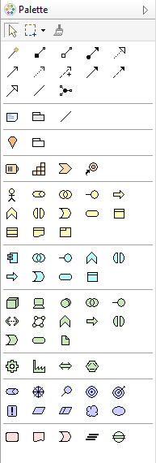

看不到调色板?别担心!
看不到调色板?别担心!如果您在视图中看不到调色板,可能是关闭了。如果是这样,请单击视图窗口右上角的“显示调色板”三角按钮打开它。
调色板包含绘图工具、元素和关系,可以将它们添加到视图中。它是一个附加到视图的区域。
视图中的调色板
要在视图中创建新元素和关系,请在调色板上选择所需的对象工具,然后单击或拖动到画布区域。将图形添加到画布后,可以通过常规的拖动操作调整其大小和重新定位。
您可以通过右键单击调色板并选择“设置...”来配置调色板显示项的方式(注意 - Archi的调色板中没有实现“使用大图标”选项)。

调色板设置
看不到调色板?别担心!
如果您在视图中看不到调色板,可能是关闭了。如果是这样,请单击视图窗口右上角的“显示调色板”三角按钮打开它。
如果您创建了特例化概念,这些概念将出现在调色板中,以便您可以像任何其他概念一样快速将特例化概念添加到视图中。这可以在首选项中启用或禁用

调色板中的特例化概念
默认情况下,每个视图都有自己附加的调色板。还可以有一个可拖动和固定到应用程序窗口任意位置的单独可分离调色板。为此,请点击主工具栏上的“调色板”按钮:

主工具栏上的“调色板”按钮
单击此按钮会将调色板从视图中分离出来并创建一个调色板窗口。您可以将其拖放到应用程序空间的任何位置。下面的示例将调色板固定在左下角:

固定在左下角的调色板窗口
关闭调色板窗口会将其重新附加到任何打开的视图中。